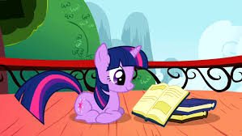

Personality
Sociability and friendship
Twilight is first introduced in the series as being asocial. She politely refuses an invitation to Moon Dancer's get-together and later states that she and Spike "don't have time for that sort of thing." When Celestia tells her to oversee the arrangements of the Summer Sun Celebration in Ponyville and to try and make friends, Twilight is indignant at the latter request. Over the course of the series premiere, however, Twilight comes to accept her new friendships and expresses a desire to stay with her new friends in Ponyville.
In Amending Fences, Twilight returns to Canterlot in an attempt to apologize to her former friends for her past actions. She succeeds with Twinkleshine, Lemon Hearts, and Minuette, but Moon Dancer coldly rebuffs the four mares. Minuette and Twilight liken Moon Dancer's behavior to the way Twilight used to act.
Twilight is very close with the rest of her closest friends and Spike, and she is forgiving enough to lend a hand to those she considers worthy of second chances, such as Starlight Glimmer.
Love of books and knowledge
In Friendship is Magic, part 1, Twinkleshine says Twilight is more interested in books than friends. Even after Twilight becomes good friends with the rest of the main characters, she continues to read and consult books. For example, she confidently joins a marathon after reading several books about running in Fall Weather Friends. She is also very knowledgeable about Equestria's history, as seen in such episodes as Luna Eclipsed and Testing Testing 1, 2, 3. She almost passes out when she finds out that the Canterlot Library has a restricted section in My Little Pony Equestria Girls: Forgotten Friendship.
Rationality
Twilight tries to be rational in unfamiliar situations. During the investigation in MMMystery on the Friendship Express, Twilight tells Pinkie Pie to stop making wild accusations, and they work together to find clues and solve the mystery.
However, Twilight can lose her cool under stress. In Swarm of the Century, she hysterically suggests building a replica of Ponyville in less than a minute before Princess Celestia can see the damage done by the parasprite infestation. In Lesson Zero, Twilight goes crazy in her attempt to write to Celestia about a friendship problem, to the point of deciding to create a problem herself. In The Crystal Empire - Part 1, she shows a desperate desire to pass a test that Celestia gives her. In The Beginning of the End - Part 1, she hyperventilates after being told that she will become ruler of Equestria after Celestia and Luna retire. In The Summer Sun Setback, she puts her whole craziness aside in order to make preparations for the final Summer Sun Celebration and her future role as ruler of Equestria. In A Trivial Pursuit, she is so desperate to win a trivia competition that she overrides Pinkie's enjoyment of the game.
Twilight tends to be skeptical of unproven claims, such as her friends' belief that Zecora is an evil enchantress in Bridle Gossip, and Pinkie's "Pinkie Sense" in Feeling Pinkie Keen.
In Party Pooped, Twilight displays an irrational fear of quesadillas. In the short Starlight the Hypnotist, Twilight also displays coccinellidaephobia, an equally irrational fear of ladybugs, stemming from her youth.
In My Little Pony The Movie, Twilight rationalizes that outside of Equestria, not every problem can be solved with friendship, especially since a con artist cat almost sells them and they are almost ratted out by a band of parrot pirates. In the underwater kingdom of Seaquestria, she has Pinkie and the rest of her friends act friendly toward the friendless Princess Skystar to serve as a distraction while she attempts to steal the transformation pearl. It is this act that ends up costing the Mane Six's friendship and getting Twilight captured by Tempest Shadow.
ㅤ
Skills
Organization
Twilight shows her knack for organization in Winter Wrap Up. When the Winter Wrap Up becomes inefficient and uncoordinated, she organizes the teams and ensures that winter is wrapped up on time. Mayor Mare gives Twilight the official title of "All-Team Organizer." Twilight also uses her organization skills in the episodes Lesson Zero, Secret of My Excess, and It's About Time. In the book The Art of Equestria, then-supervising director Jayson Thiessen suggests that Twilight has "a touch of OCD".
Teaching
In the episode Twilight Time, Twilight takes time each week to teach the Cutie Mark Crusaders various skills. She attempts to teach Sweetie Belle to use the telekinetic component of her magic, Apple Bloom how to make botanic growth potions, and Scootaloo how to strip and reassemble various types of scooter and cycle. Twilight is overjoyed when she thinks the other classmates also want to learn new things, but she is disappointed when she finds out that they merely want to spend time with a local celebrity.
Twilight's ability as a teacher is proven in that she succeeds in teaching all three Crusaders the skills she intended to teach them. They all demonstrate a high degree of aptitude at the end of their lessons.
Magic
Twilight Sparkle is exceptionally talented at magic. In a flashback in The Cutie Mark Chronicles, Princess Celestia tells Twilight that she has never seen a unicorn with so much raw ability.
As talented as Twilight is, her spells occasionally misfire or fail.
- When she casts a spell on the parasprites in Swarm of the Century so they won't eat food, they begin to consume items which aren't food, and subsequently destroy Ponyville.
- When she tries to assist with Winter Wrap Up by animating a plow with a "come-to-life" spell, she loses control of it and makes a mess.
- In The Return of Harmony Part 1, she tries to reverse Discord's strange effects with a "fail-safe spell," but it fails.
- In the episode Magic Duel, she has difficulty performing an age spell, which she says is only for "the highest level unicorns."
In the first season, Twilight's horn usually glows white or the same hue as her coat, and the objects she is manipulating glow white, lavender, or pink. When she manipulates multiple objects at once, several other colors are used as well, for example in the gem-finding scene in A Dog and Pony Show. Starting with the second season's third episode, Twilight's magic is uniformly depicted using a pink glow, although it is colored white in a flashback in The Point of No Return.
Princess Twilight Sparkle – element of magic
| Kind | Alicorn (S3E13 onward) Unicorn (seasons 1–3) Human (EqG) |
| Sex | Female |
| Residence | Canterlot (S1E1, S9E26) Castle of Friendship, Ponyville (seasons 5–9) Golden Oak Library, Ponyville (seasons 1–4) Crystal Princess Palace (toy line) |
| Occupation |
Ruler of Equestria (S9E26) Princess Celestia’s student (seasons 1–3) |